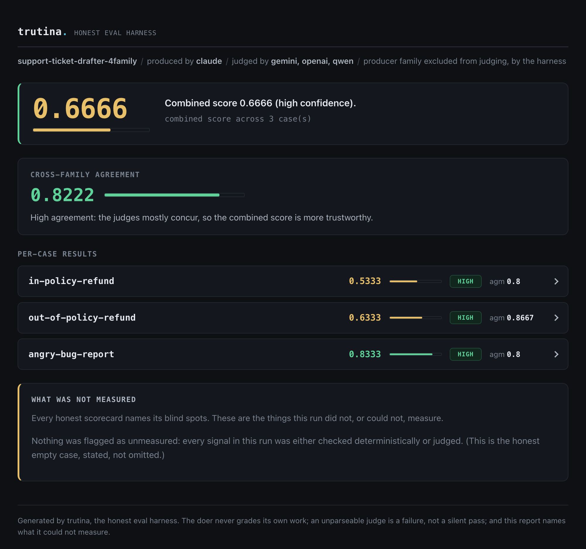
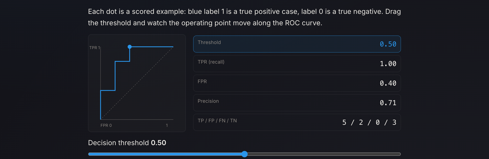
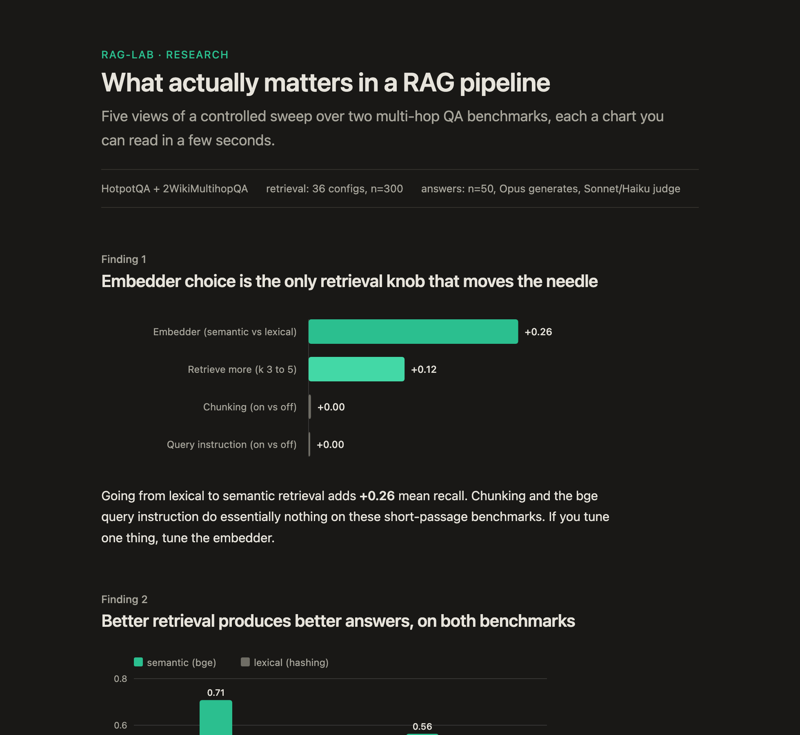

I put human interface judgment upstream of what the model ships.
Target surface: interface and design-engineering for AI-native products. The throughline across all six pieces below is one move, made by someone who runs AI agents every day: I make the interface call a model would smooth over, then encode that judgment as a system the model has to run against. Human-AI interface, design-as-epistemics, native craft, a self-enforcing brand system, interactive explainers, and research made legible, all built by being the user first.
This isn't a theory I reached from a desk. Years in field service, I watched technicians lose trust in a diagnostic tool that handed them a dashboard instead of the raw readings they needed to fix the problem in front of them. Their frustration was the brief: surface the real measurement, never a reassuring abstraction. Every piece below is that same call, now aimed at what a model produces.
A four-surface conductor for running a fleet of agents from one seat, where the scarce resource is your attention, not compute.
When you run autonomous agents from a single seat, the design question is triage and interruption: which of N agents is blocked on me right now, how long has it idled (the cost compounds), and can I unblock it in one gesture without dropping into a terminal. There was no established pattern, so I built one out of running roughly 13 repos with parallel agents daily.
One piece of state (pending decisions, agent tasks, mode) is the single producer, rendered four ways for four contexts: a native macOS menu-bar app, a terminal raid-frame, an inline progress card, and a web cockpit card. The judgment is in the details. A blocked decision hijacks the menu-bar glyph before you open the menu, because that is the one thing worth surfacing ambiently. The queue sorts urgent-first then oldest-first, encoding "idle cost compounds." Each buffered question becomes a tray item that unblocks the lane in place, dispatched through one shared verb so all four surfaces stay in lockstep. The progress bar fills with a seven-eighths block rather than a full one, because the full block overshoots the line height in many fonts and reads ragged: a one-pixel mismatch I caught in my own output.
The same caduceus glyph means "a human is needed" in Swift, in Python, and in CSS.
A human decided that a blocked agent should hijack the menu-bar glyph itself, and that answering it should be one click in the tray.
FLEET · mode:orchestrated · warp ⚡
⚕ NEEDS YOU (10)
[branch-review]19d ago
Merge claude/preclear-local-cluster?
↳ merge · hold · revise
[auth-flow-review]19d ago
Ship the 3 held auth-flow fixes?
↳ ship-live · codex-cross-review-first · revise
[voting-choice-default]19d ago
The 7-day eviction-choice auto-default
↳ lazy-resolution · standalone-cron-worker
[branch-review]16d ago
Merge codex sprite branch?
↳ merge · hold · review-first
▉▉▉▉▉▉▉▉▉▉▉▉▉▉▉▉▉▉▉▉▉▉▉▉▉▉▉▉▉▉the inline build-progress card; the fill is a seven-eighths block, never the full block, which overshoots the line-height and reads ragged
fleet-snapshot --watch · live triage · ⚕ = a human is needed · urgent-first, then oldest
4 surfaces, 1 state producerevent-driven via DispatchSource + safety timer⚕ glyph identical in Swift / ANSI / CSStoken-conformance test-enforced
02 · Design as epistemics
The scorecard that can't flatter a bad result
Most AI eval dashboards quietly round up. This one is built so it can't.
The design problem for this honest-eval tool (the repo is assay, the tool is trutina, same project) was the opposite of a normal dashboard: build a scorecard a non-engineer reads in ten seconds that is structurally incapable of overstating itself.
So honesty became a visual property, not a disclaimer. Scores under 0.5 land in the fail hue and are never dressed in a reassuring green; the display truncates with %.4g so no number is ever rounded up. A not-scored case renders muted and labeled absent, so a missing measurement can't masquerade as a flattering zero. Confidence gets its own token (a pill plus a 3px border) because a mid score and a low-confidence run can share a hue but are different claims. Rows that need a human look auto-expand; a merely low score stays collapsed, because its honest readout already tells the story. The same lab palette and mono type carry into the research-blog forest plots, where green appears only for statistically real effects.
The same decorrelated discipline later refuted a result I had pre-registered, and the scorecard surfaced it without flinching. The body of work it grades now runs from black-box behaviour on three frontier models to white-box audits inside GPT-2's weights, where the same honest cross-check shows interpretability's standard tools are confidently partial.
A low score reads as low, a missing measurement reads as absent, and the blind spots get their own panel.

trutina scorecard, four families · zero JS, opens offline, WCAG AA per mode
0 deps, 0 JavaScript%.4g, never rounds upcolour never the only channelone system, tool + research figures
03 · Native craft
The DAW a mix engineer built for himself
A native Apple-platform DAW where the load-bearing decisions are the ones only a working mix engineer would make.
VeraNota is a native macOS/iOS DAW (SwiftUI, Swift, C) chasing Logic and Pro Tools parity. The bar is brutal: a 30-year mastering engineer has to trust it in 30 seconds, with no dumbing-down, and every fader, send, and meter has to fit while the app still feels calm.
The answer is a written UX thesis rendered as a tokenized system. Six themes each ship a full 10-token palette that every chrome surface resolves through, so a theme switch re-washes the whole app without touching a call site. Motion lives only between contexts, never on a fader, because a mixing engineer touches those thousands of times a session. Monospace is reserved for numeric readouts so dB columns line up. Badges leave a zero-height placeholder so the mixer never jumps under a scanning eye. The sharpest call: VU green/amber/red are held out of the theme system entirely, because they encode safe/loud/clipping, and recoloring them per theme would weaken an engineering signal.
Even the app icon resolves the same in-app copper token, #CF7830, down to Apple's Big Sur squircle math.
VU red is held out of the theme system on purpose. It means clipping. That is a producer's call, not a designer's default.
One generative mark and a token contract, built so AI-generated UI stays on-brand and accessible as the surfaces multiply.
Endenza is an agentic-OS PWA built by one maker conducting AI agents, and the surfaces sprawl fast: an operator cockpit, a walkable showcase, marketing pages, 21 user themes. Left unsupervised, agents will happily ship a hard-coded hex, a luminance-flipped dark mode that fails contrast, or a generic spinner. So I encoded the taste as a system the models execute against, not a style guide they might read.
The mark carries the thesis in its geometry: three equal disks on an equilateral triangle, two pigments mixing subtractively, all three collapsing to additive white-gold light at the centroid. Orchestration is generative, not extractive, rendered as identity. A 3.5px pin-prick at exact center is both the trademark detail and the anchor that lets the mark survive at 16px, the fix after I killed an elegant Borromean-knot mark whose line weight vanished small. The token contract is where it self-enforces: the ink scale carries explicit WCAG targets per step, all 21 themes ship hand-tuned light and dark sets rather than a generated flip, and spinners are banned in favor of designed empty and error states.
A grep guard catches any hard-coded hex before it can merge.
Killing the prettier Borromean mark was the call: its line weight vanished at favicon size. Taste overruled the more elegant option.
21 themes, light + dark, hand-tuned--ink scale: 14:1 → 3:1 targetssurvives at 16pxno-spinners law, 9 empty states
05 · Interactive explainers
Make the learner feel the mechanism
A 65-lesson AI study platform where every control drives the real computed quantity, never a canned animation.
Most AI explainers describe a mechanism in prose and illustrate it with a decorative loop, so the reader watches a bar wiggle and learns nothing about what moves it. Arbiter Machinae holds research notes and Study, a Khan-Academy-for-AI platform, under one editorial system. The bet: if a learner drives the real math with their own hand, they feel the mechanism instead of taking my word for it.
The constraint was honesty: a slider that fakes its output is worse than no slider. So every interactive binds a control to the quantity it claims to teach, computed live in the browser from real data. The temperature lab runs an actual softmax over five real token logits and resharpens each frame. The eval-significance lab does real bootstrap resampling and reads off the 2.5 and 97.5 percentiles, so the interval visibly tightens as you raise n. The ROC lab recomputes a true confusion matrix at the dragged threshold and slides the operating point along a genuinely swept curve. Five labs, one rule, no decoration. The editorial layer is just as deliberate: a measured ~75-character column, self-hosted subsetted variable fonts, on-palette hand-authored SVG diagrams.
Two other models graded the pedagogy in a doer-is-not-grader loop and caught six real errors I fixed.
A slider that fakes its output is worse than no slider. Every control drives the real computed quantity, or it doesn't ship.

the ROC lab, live · drag the threshold, the curve and confusion matrix recompute from real data, not a canned animation
65 lessons, 5 tracks5 labs bound to real computationdoer ≠ grader, 6 errors caughtall links 200, all-client-side
06 · Research, made legible
What actually matters in a RAG pipeline
An overnight study that ran the experiment, shipped the negative results, and turned the numbers into a page you read in seconds.
rag-lab is a build-and-eval lab for retrieval-augmented generation. The question was plain: of the knobs everyone tunes (embedder, k, chunking, query phrasing), which actually move the numbers? I ran a controlled sweep over two multi-hop QA benchmarks, a free retrieval tier of 36 configurations at 300 questions each, then a bounded paid tier for answer quality, with the generator (Opus) and the judges (Sonnet and Haiku) kept distinct so no model ever graded its own answer.
The harder half was making the result legible. The study ships as one page where each finding is a single chart you read in a few seconds, drawn as self-contained inline SVG with no JavaScript and no CDN, following the reader between light and dark. The whole 36-cell sweep collapses into two heatmaps where darker is better, so the embedder's dominance and chunking's irrelevance are obvious at a glance instead of buried in a table.
The findings are honest, including against me. Chunking does nothing on these benchmarks, so the page says exactly that. A query-instruction effect I had called at n=100 washed out to null at n=300, and the writeup records the correction rather than quietly keep the better-looking number.
A result I had called at n=100 washed out at n=300. The page corrects me in writing, next to the chart that shows it.

the live findings page · five views, light/dark, self-contained inline SVG, zero JavaScript